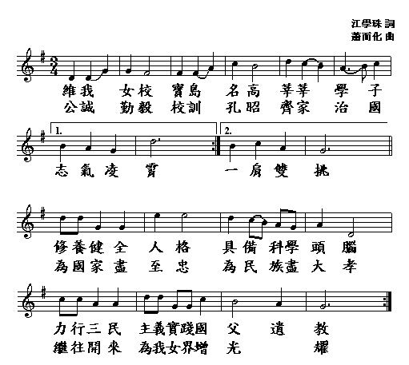

校 園 介 紹


台北市立第一女子高級中學
學校介绍
本校創始於西元1904年，前身為日據時期「臺北州立臺北第一高等女學校」。臺灣光復後，於民國 34 年（西元1945年）12 月 12 日正式定名為「臺灣省立臺北第一女子中學」。1949 年（民國 38 年）10 月增設夜間部，至 1963 年（民國 52 年）8 月附設女子進修補習學校，1967年（民國56年）7月臺北市改制為院轄市，更名為「臺北市立第一女子高級中學」，1982 年（民國71 年）7 月夜間部正式裁撤。2004 年，創校百年，進修補習學校走入歷史。
本校建校迄今百餘年，學生總數約兩千餘人，設有普通班、數理資優班、人文社會資優班以及科學班。北一女中百年來始終是教育、文化傳承的殿堂，無論是日治時期的「第一高女」，或是光復至今的「北一女」，都是全臺灣女學生嚮往的理想之校，在歷任校長經營與無數良師的春風化雨下，校風優良聲譽卓著。歷任校長在淳樸勤學的優良校風奠基之上，兢業於校務完善發展，同時求新求變、與時俱進。教師教學專業精進，學生學習成果輝煌，型塑全力以赴、追求卓越的校園文化，向為全國第一女子指標學校。百年來眾多學子優游於校園，承五育並立之優良教育，凡事盡力，並能珍惜榮譽。創校迄今，數萬名校友遍布海內外，無論持家、就業，皆能發揮「齊家治國，一肩雙挑」之精神，見證臺灣百年來社會的進步。巾幗不讓鬚眉，女子出頭的社會風潮，見證了綠園菁英女子教育，百年樹人的碩果。
校歌
校訓
公 注重公德、維護公益、愛惜公物、遵守公約。
誠 律己以誠、處事以誠、待人以誠、報國以誠。
勤 勤能補拙、勤能生智、勤能圖強、勤能致富。
毅 毅以修德、毅以進業、毅以立志、毅以成事。